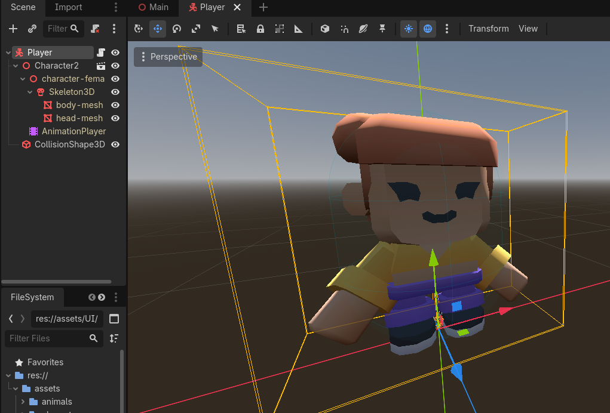

Section 3 of 9
Next Section →
Video Tutorials
━━━━━━━━━━━━━━━━━━━━Section 3 Videos
Watch: "3D Player Movement in Godot"
Section 3: Player Movement
Import a 3D character model, set up textures, and build a player with movement, gravity, and jumping using the CharacterBody3D template.
Section Progress: 0%
1
Getting a 3D Character
You'll need a 3D character model for your player. Here are some free options:
- Kenney Character Pack: https://kenney.nl/assets/character-pack
- KayKit Characters: https://kaylousberg.com/game-assets
- Itch.io Free 3D Characters: Search for "character"
For this example, I'll use a Kenney character model.
- Download your chosen character pack
- Extract the ZIP file
- Look for a .glb file (the 3D model)
- Make sure you also have the .png texture files
💡 What is .glb? .glb is a 3D model format that can include textures, animations, and materials all in one file. It's the recommended format for Godot 3D.
2
Adding the Model to Godot
- In the FileSystem dock, navigate to your assets/characters/ folder
- Drag the .glb file into the folder
- Also drag any .png texture files that came with the model
- Godot will automatically import the model
⚠️ Important: Keep the .glb and .png files in the same folder. Godot uses the textures automatically when the model is imported.
3
Making the Model a Standalone Scene
We'll turn the imported model into its own scene so we can easily reuse it and add scripts.
- In the FileSystem dock, right-click your .glb file
- Select "New Inherited Scene"
- This creates a new scene with the model as the root
- Save it as "character.tscn"
- Double-click the new scene to open it
💡 Pro Tip: "New Inherited Scene" creates a scene that inherits from the .glb file. This means if you update the .glb file, your scene updates automatically.
4
Building the Player Scene
- Press Ctrl + N to create a new scene
- Add a CharacterBody3D as the root node
- Rename it to "Player"
- Add your character.tscn as a child of the Player node
- Add a CollisionShape3D as a child of the Player node
- Set the collision shape to CapsuleShape3D (Height: 1.8, Radius: 0.4)
- Position the collision shape to match the character model
- Save the scene as "player.tscn"
💡 Why CapsuleShape3D? Capsule shapes are ideal for humanoid characters because they approximate the body shape and handle collisions smoothly with the environment.

Figure 3.4: Player scene with CharacterBody3D, character model, and CollisionShape3D
5
Using Godot's CharacterBody3D Template
Select the Player node and add a script. Name it "player.gd". Godot provides a great starting template for CharacterBody3D. Use this code:
extends CharacterBody3D
const SPEED = 5.0
const JUMP_VELOCITY = 4.5
func _physics_process(delta: float) -> void:
# Add the gravity.
if not is_on_floor():
velocity += get_gravity() * delta
# Handle jump.
if Input.is_action_just_pressed("ui_accept") and is_on_floor():
velocity.y = JUMP_VELOCITY
# Get the input direction and handle the movement/deceleration.
var input_dir := Input.get_vector("ui_left", "ui_right", "ui_up", "ui_down")
var direction := (transform.basis * Vector3(input_dir.x, 0, input_dir.y)).normalized()
if direction:
velocity.x = direction.x * SPEED
velocity.z = direction.z * SPEED
else:
velocity.x = move_toward(velocity.x, 0, SPEED)
velocity.z = move_toward(velocity.z, 0, SPEED)
move_and_slide()Understanding the Template Code
- const SPEED - Horizontal movement speed
- const JUMP_VELOCITY - How high the player jumps
- get_gravity() - Gets the gravity value from Project Settings
- Input.is_action_just_pressed("ui_accept") - Detects Spacebar press
- transform.basis - Makes movement relative to player facing direction
💡 New Concept:
get_gravity() pulls the gravity value from your Project Settings. This keeps gravity consistent across all physics objects in your game.
6
Adding Animation to Your Character
Option A: Using Kenney's Built-in Animations
- Open your player.tscn scene
- Select the character.tscn (imported model) node
- Right click and select Editable Children
- In the Inspector, find the AnimationPlayer node
- You should see animations like "idle", "walk", "run", "jump"
- Note the exact names of these animations
Option B: Creating Simple Animations
- Select the root Player (CharacterBody3D) node
- Add a child node: AnimationPlayer
- Rename it to "AnimationPlayer"
- Select the AnimationPlayer node
- Click "Animation" → "New" and name it "idle"
- Set the length to 1.0 second
- Add keyframes for the character's standing pose
- Repeat for "walk" (length: 0.5 seconds) and "jump" (length: 0.3 seconds)
Open your player.tscn scene and add an AnimationPlayer to control the character's animations:
💡 Pro Tip: Kenney character models often come with built-in animations. Check the Animation section in the Inspector first!
7
Full Player Script with Animations
Update your player.gd script to include animation control and character rotation:
extends CharacterBody3D
const SPEED = 5.0
const JUMP_VELOCITY = 4.5
# This line is if your character model animation is handmade by you DO NOT use both lines
@onready var animation_player = $AnimationPlayer
# This line is if your character model is imported from a .glb file with animations DO NOT use both lines
@onready var animation_player = $character/AnimationPlayer
@onready var character = $character # Your imported model node
var current_animation = "idle"
func _physics_process(delta: float) -> void:
# Add the gravity.
if not is_on_floor():
velocity += get_gravity() * delta
# Handle jump.
if Input.is_action_just_pressed("space") and is_on_floor():
velocity.y = JUMP_VELOCITY
# Get the input direction and handle the movement/deceleration.
var input_dir := Input.get_vector("left", "right", "up", "down")
var direction := (transform.basis * Vector3(input_dir.x, 0, input_dir.y)).normalized()
if direction:
velocity.x = direction.x * SPEED
velocity.z = direction.z * SPEED
else:
velocity.x = move_toward(velocity.x, 0, SPEED)
velocity.z = move_toward(velocity.z, 0, SPEED)
move_and_slide()
# Update animations
update_animations(direction)
func update_animations(direction):
var target_animation = "idle"
# Check if jumping
if not is_on_floor():
target_animation = "jump"
# Check if walking
elif direction.length() > 0:
target_animation = "walk"
# Rotate character to face movement direction
var target_rotation = atan2(direction.x, direction.z)
character.rotation.y = lerp(character.rotation.y, target_rotation, 0.1)
else:
target_animation = "idle"
# Switch animation if needed
if current_animation != target_animation:
current_animation = target_animation
animation_player.play(current_animation)Understanding the Animation Code
- @onready var animation_player - Gets the AnimationPlayer node
- @onready var character - Gets the character model node
- update_animations() - Decides which animation to play
- atan2() - Calculates the angle to face movement direction
- lerp() - Smoothly rotates the character
💡 New Concept:
atan2() calculates the angle from the x and z components of the direction vector, used to rotate the character smoothly toward movement direction.
8
Testing Your Animated Player
- Open Environment.tscn
- Press F5 to run the game
- Use WASD to move the player
- The character should turn to face the movement direction
- The character should play the walk animation when moving
- Press Space to jump and see the jump animation
- When standing still, the character should play the idle animation
Troubleshooting
- Character doesn't turn: Check that the character node is correctly referenced
- Animation doesn't play: Verify animation names match the script
- Character snaps rotation: Adjust the lerp speed (0.1 is a good starting point)
💡 Congratulations! Your player now has a fully animated character that moves, turns, and jumps with correct animations!